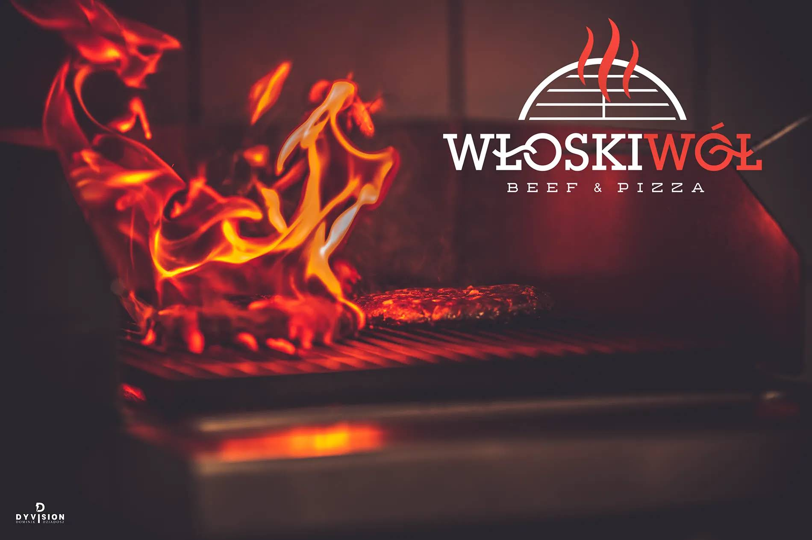
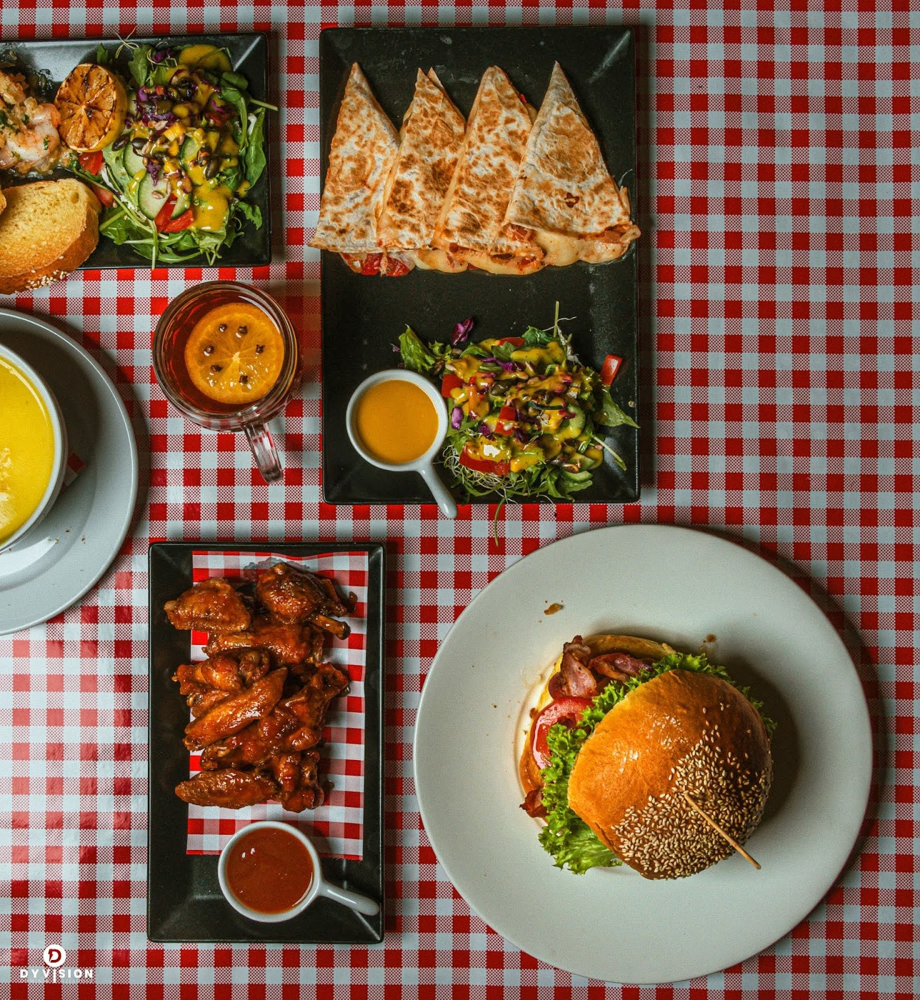

Burgery
Hawajski Żar
Wołowina 200 g, warzywa, 2× cheddar, jalapeño, nachosy, 2× ananas, sos chilli, majonez, mix sałat.
41,9 / 47,9 złPełne menu ↗
Beef & Pizza · Zwierzyniec
Soczyste burgery, pizza, żeberka, steki i konkretne dania obiadowe. Duże porcje, szerokie menu i jeden adres w Zwierzyńcu.

Od soczystych burgerów i pizzy po żeberka, steki oraz konkretne dania obiadowe. Włoski Wół Beef & Pizza łączy wyraziste smaki, solidne porcje i różnorodne menu, w którym każdy znajdzie coś dla siebie.
„Burgery i pizza zdecydowanie zasługują na pochwałę — wszystko było świeże, bardzo smaczne i przygotowane z dużą starannością.”
„Burgery są genialnie przemyślane i świetnie skomponowane smakowo. […] Moja żona była absolutnie zachwycona zupą cytrynową.”
„Burger ogromny, soczysty, dużo sosu, frytki pyszne i chrupiące. Filet z suszonymi pomidorami TOP.”

Sprawdź pełne menu Beef & Pizza albo odwiedź nas przy Zamojskiej 8A w Zwierzyńcu.